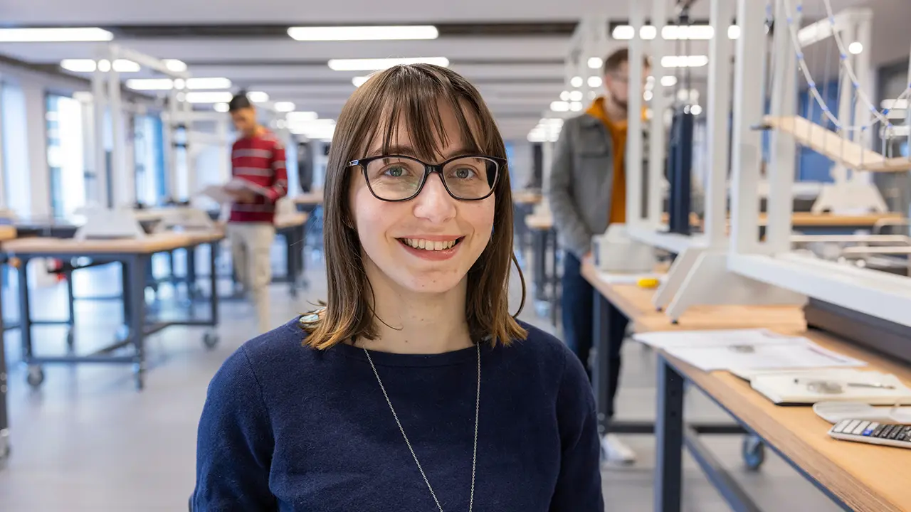

Conference
Erasing Rural Poverty
Improve the financial wellbeing of individuals and low-income families living in rural communities.
4 November 2025
10:15 - 12:45

The aim of this event is to improve the financial wellbeing of individuals and low-income families living in rural communities who are experiencing financial hardship.
This will be achieved by raising awareness of available support from agencies, such as Citizens Advice and breaking down barriers for people to access support more readily. In addition, the event will also aim to raise awareness of rural communities’ financial struggles, to give voice to those currently struggling facing financial hardship.
The event will comprise a morning session, repeated in the afternoon to hopefully maximise attendance by fitting around peoples’ work, childcare and/or other commitments.
Each session will commence with a series of video scenarios, depicting people from rural communities highlighting their financial plight, in a ‘talking heads’ approach. The session will then move to a more interactive discussion, led by the event leads, and asking participants their perceptions and opinions of how best to resolve the situation highlighted in each video, focusing, on available support. The session will end with event leaders sharing information where people in rural communities can access support, when facing financial difficulties.
-
4 November 2025
10:15 – 12:45
Ashburton Town Hall, North Street, Ashburton, Devon, TQ13 7QQ
-
10 November 2025
10:15 – 12:45
Ashburton Town Hall, North Street, Ashburton, Devon, TQ13 7QQ
In Plymouth, we are shaping extraordinary futures

Plymouth professor champions arts and humanities research
19 November 2026
University of Plymouth is first to launch an electric boat
20 November 2026

Students who changed paths are recognised in national awards
21 November 2026